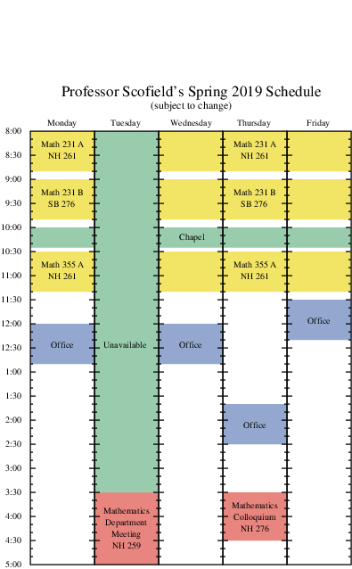

MATH
355 A
Advanced Linear Algebra
Spring, 2019
Course Information
Calendar
Course Syllabus
:
SLOs
,
expectations
,
hw policies
,
grade calculation
,
accommodations & miscellany
WebWork
(various HW assignments)
Hand-checked assignment solutions:
1
,
2
,
3
Test solutions:
Test 1
,
Test 2
A list of
suggested problems
to look at from the Strang book
Some
Octave scripts
implementing methods or algorithms in the course
Professor Scofield's schedule
(see right margin)
Video resources
Linear Algebra
examples (from mathispower4u.com)
Instructional videos from
Khan Academy
on
linear algebra
topics

Additional reading resources
How Google Finds Your Needle in the Web's Haystack
, by David Austin
More than you wanted to know about quadratic forms
, by KC Border
Face Recognition Using Eigenfaces
(an application of PCA), by Matthew A. Turk and Alex P. Pentland
The paper
The Fundamental Theorem of Linear Algebra
, where Gil Strang first(?) made his case for this name
Down with determinants
, a paper by Sheldon Axler
Introduction to Applied Linear Algebra: Vectors, Matrices, and Least Squares
, by Boyd and Vandenberghe
Who's #1?: The Science of Rating and Ranking
, by Langville and Meyer
When Life Is Linear: From Computer Graphics to Bracketology
, by Tim Chartier
Linear Optimization: The Simplex Workbook
, by Glenn Hurlbert
Linear and Integer Programming Made Easy
, by Hu and Kahng
Musimathics: The Mathematical Foundations of Music, by Gareth Loy:
Volume 1
,
Volume 2
Software Links
GNU Octave
, a Matlab-like piece of software for scientific computing
Local installations for
MacOS 10.11 or later
,
Windows or Linux
A
tutorial
by Drs. Long and Smith, not specifically for linear algebra
tutorials by Prof. Scofield:
1
,
2
Sage, an open-source computer algebra system
sagemath.org
, the main website from which you can download the latest stand-alone version
Alternatively,
create/access an online account
on Calvin's server, or use
SageMathCell
for quick one-off commands
Robert Beezer's
Sage Quick Reference for linear algebra
Wolfram alpha
Last Modified: